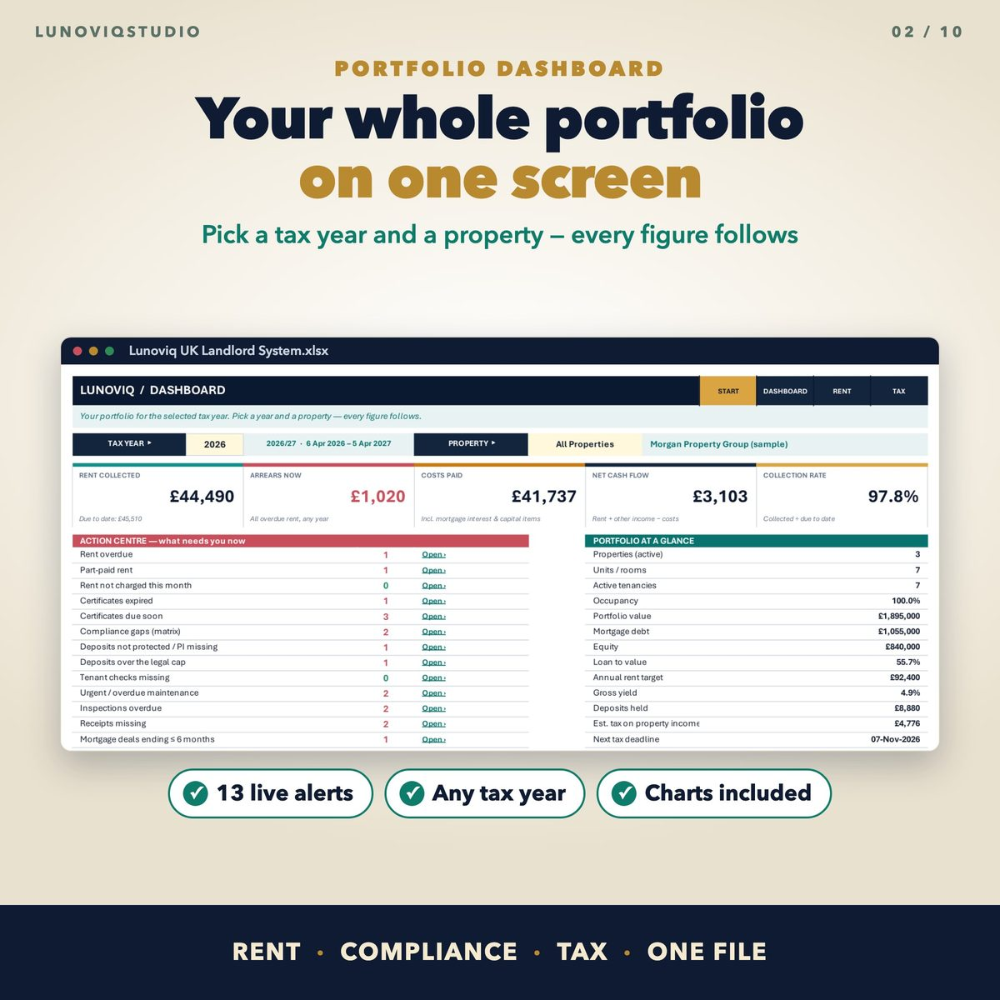
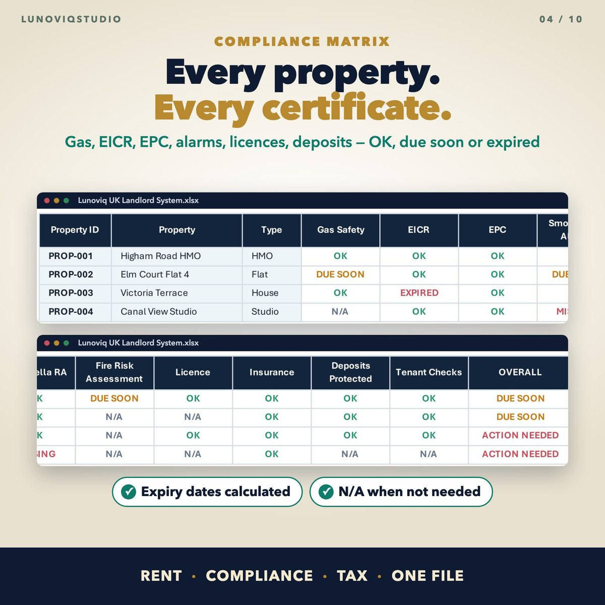
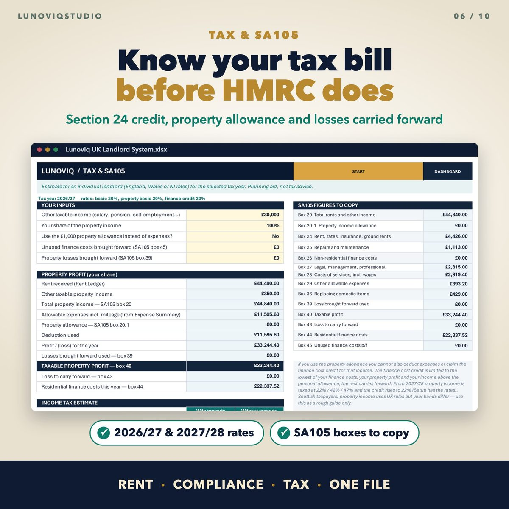
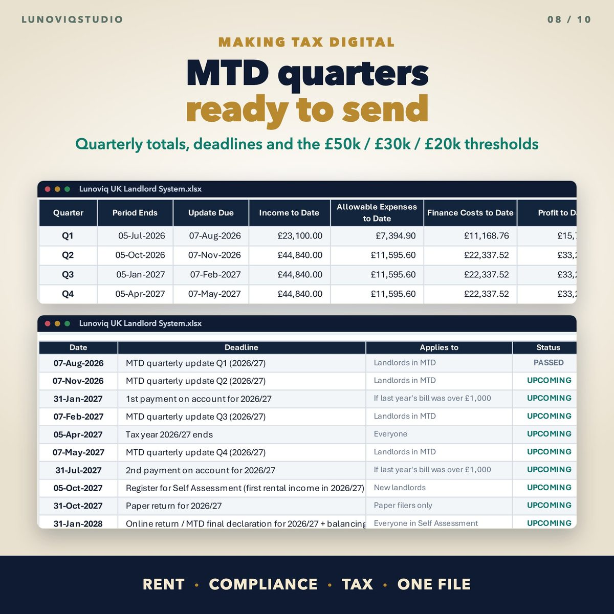

Home › Spreadsheets › UK Landlord Spreadsheet 2026/27
UK Landlord Spreadsheet 2026/27
Rent, arrears, compliance, SA105 tax and Making Tax Digital for UK landlords, in one Excel and Google Sheets workbook.
Made for: Private landlords with 1 to 100 properties in the UK, including HMO owners and landlords who manage lets for family.
Get it on EtsyWhat it doesWhat it does
Dashboard by tax year
Rent collected, arrears, costs, net cash flow, collection rate and live alerts for the year and property you pick.
Rent ledger
Balances, days overdue, arrears bands (1-30, 31-60, 61-90, 90+ days) and the next chase step. Flags any tenancy you forgot to charge.
Compliance matrix
Gas safety, EICR, EPC, smoke and CO alarms, legionella, fire risk, licences, insurance, deposits and tenant checks for every property: OK, due soon, expired or missing.
Renters' Rights Act checks (England)
Deposit cap (5 or 6 weeks' rent), earliest date for the next Section 13 rent increase, Right to Rent and written terms checks.
Tax and SA105
An estimate for an individual landlord: Section 24 finance cost credit, the £1,000 property allowance and losses carried forward.
Making Tax Digital figures
Cumulative quarterly totals by MTD category, the update deadlines (7 Aug, 7 Nov, 7 Feb, 7 May) and a check against the £50k / £30k / £20k thresholds.
See it




What you get
- Blank Excel workbook (28 linked sheets)
- Sample workbook with example properties
- Google Sheets version (copy link in the guide)
- User guide PDF
Instant download. One-off price, no subscription, no macros.
Questions
Does it submit my quarterly updates to HMRC?
No. The spreadsheet works out the figures for each quarter. To send them you need HMRC-recognised software; many landlords use bridging software that reads a spreadsheet.
How many properties can it hold?
Up to 100 properties. It has been tested full at 100 properties with no errors.
Does it work for limited companies?
The tax estimate is for individual landlords. A company can still use the rent, arrears, compliance and expense sheets.
Does it work in Google Sheets?
Yes. You get a copy link for a Google Sheets version as well as the Excel files.